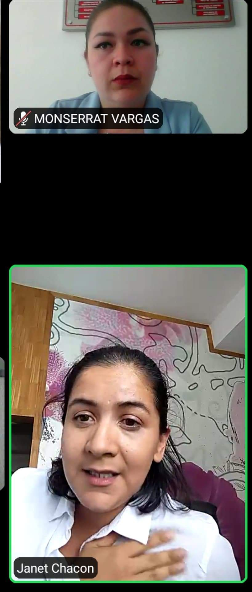
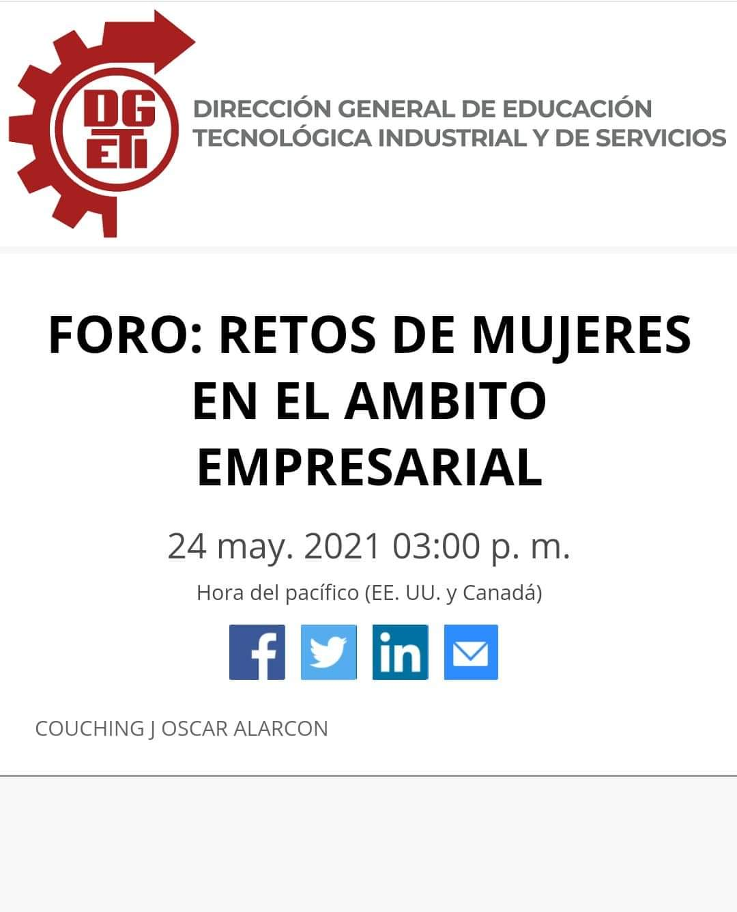

En esta conferencia nos platicaron sobre sus experiencias a lo largo de sus vidas como emprendedoras y lo mucho que les a costado salir adelante, ya sea por la falta de experincia o la discriminacion por el echo de ser mujeres y que no pueden hacer las mismas cosas que un hombre. Tambien mientras nos decian todo esto nos daban consejos por si queriamos hacer una empresa propia cuando crescamos. Por ultimo me parecio muy interesante como nos explicavan cada uno de sus puntos de vista al ya tener experiencia en este tipo de casos y en lo ultimo que nos dijieron me parecio muy importante ya que nos dijieron que si tenemos un sueño o alguna meta trabajemos lo más duro que podamos y que lo hagamos con gusto ya que es algo que nosotros querramos.
 